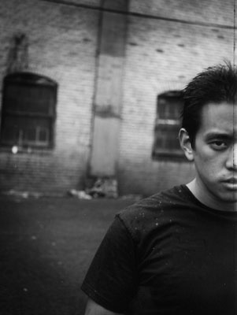

|
|
- Biography -

JOSEPH HAHN
Date Of Birth : 3/15/77
INSTRUMENT: Turntables, Samples, Beats, & Sounds
GEAR:
- Vestax PDX-2000Turntables
- Rane TTM 54 DJ mixer
- AKAI MPC 2000
- Emagic Logic Audio
- Various effects
- Shure M44-7 needles
- Custom-made vinyl
Joseph Hahn was born in Glendale CA. He has a true passion for art, as he attended the Pasadena art
college of design (where he met Mike). He didn't graduate, but went on as a comic book artist as well
as working on special effects for films. His art has not been drenched by Linkin Park whatsoever, and the band
allowed him to direct some of their music videos, such as "Somewhere I Belong" as well as contribute to the artwork
for the Meteora cover. Joe took up turntables and mixing music in junior high and joined up with Mike in his band
called Xero along with Rob, Brad and Phoenix. One of Joe's strange quarks is that he believes he has a split
personality, with an evil side known as "Remy".
QUOTE:
"If it ain't broke, break it, then superglue it together. When you're done, give it to a friend." -Joe
|